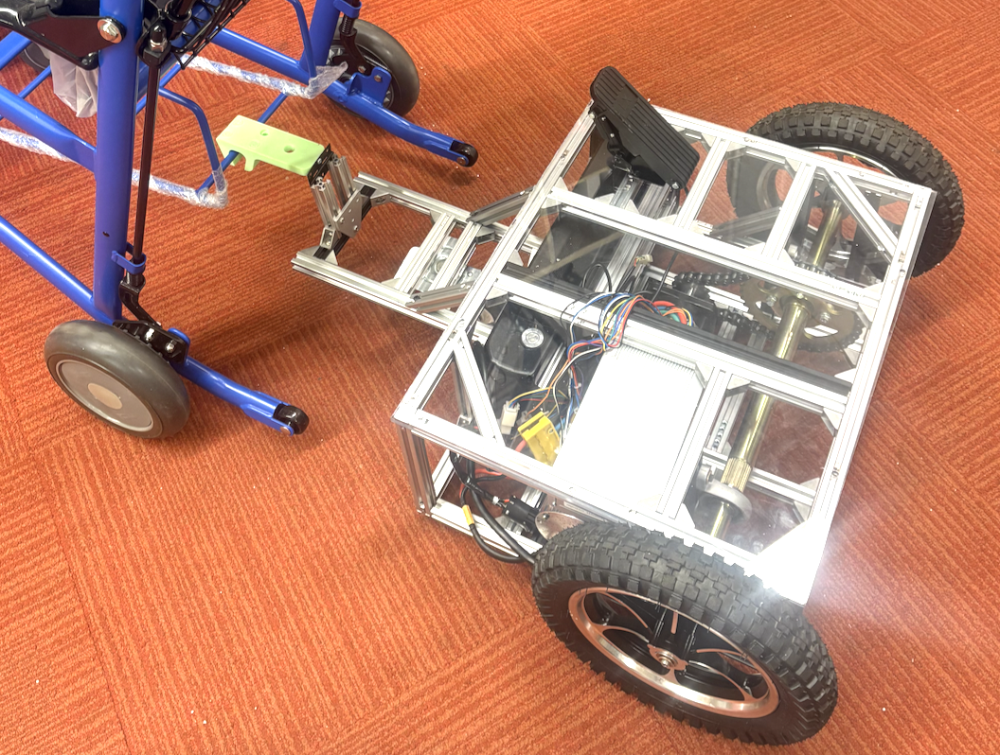

I’m currently co-leading the design and building of a detachable Segway-like powered tow for non-electric wheelchairs under Professor Hod Lipson in Columbia’s Creative Machines Lab. I help manage project logistics, CAD design, machining, fabrication, and integration of the motor, drivetrain, battery, and controller.